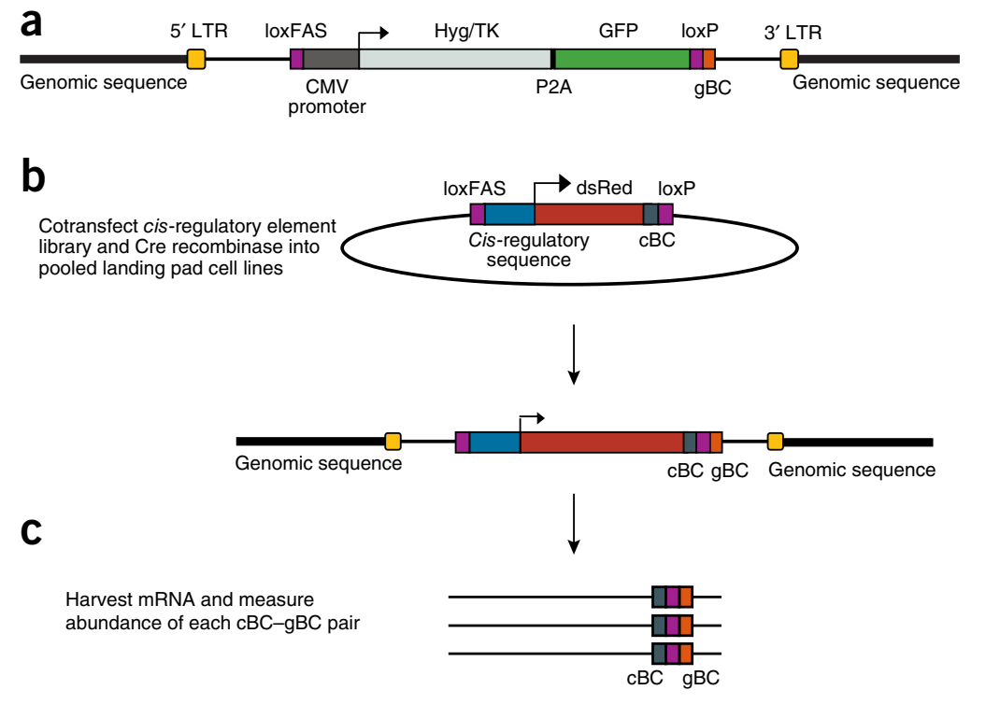
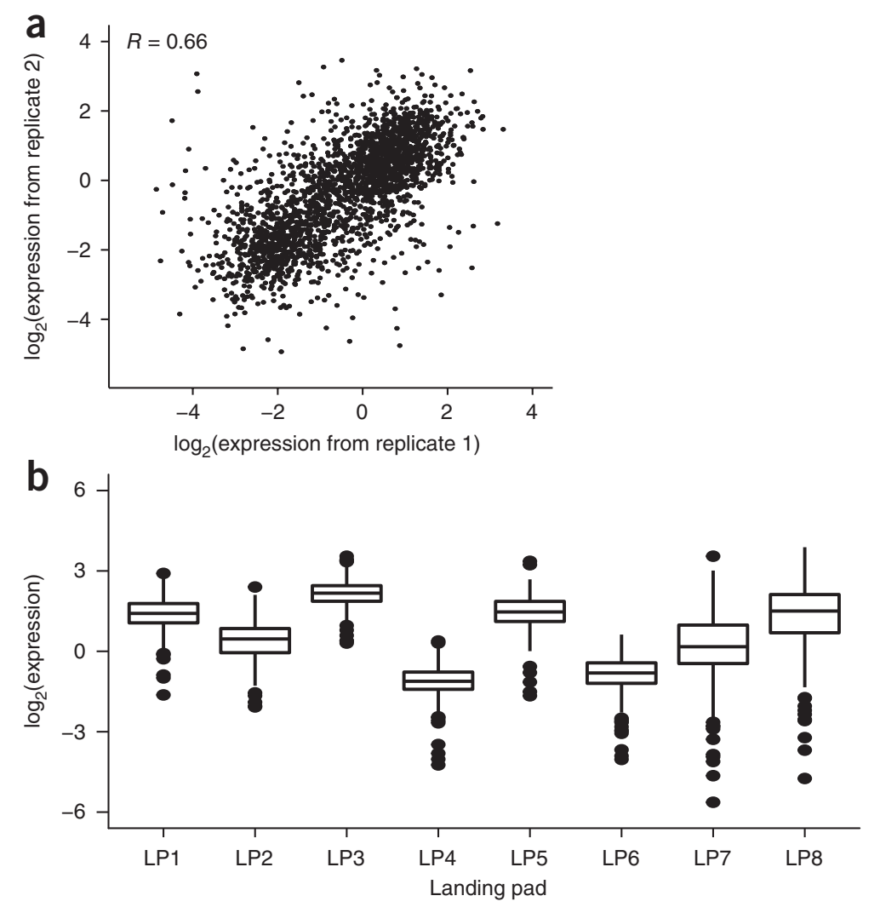
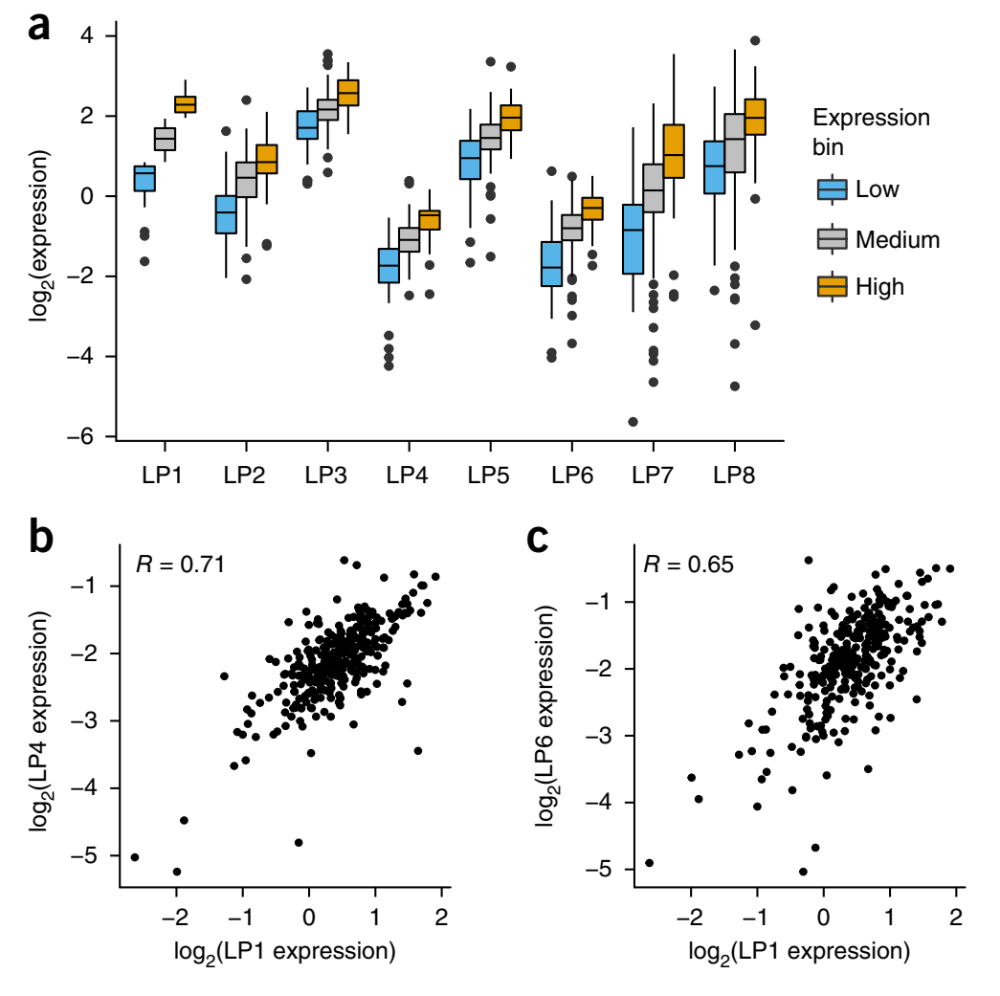
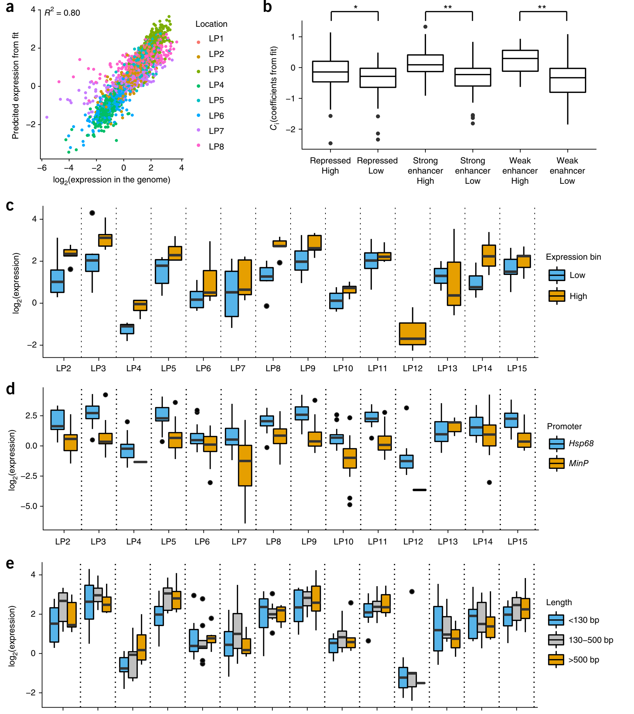

A massively parallel reporter assay dissects the influence of chromatin structure on cis-regulatory activity
1The Edison Family Center for Genome Sciences and Systems Biology, Washington University School of Medicine, Saint Louis, Missouri, USA. 2Department of Genetics, Washington University School of Medicine, Saint Louis, Missouri, USA. 3Present address: Department of Biological Sciences, Howard Hughes Medical Institute, Columbia University, New York, New York, USA. 4These authors contributed equally to this work. Correspondence should be addressed to B.A.C. (cohen@wustl.edu).
A gene's position in the genome can profoundly affect its expression because regional differences in chromatin modulate the activity of locally acting cis-regulatory sequences (CRSs). Here we study how CRSs and regional chromatin act in concert on a genome-wide scale. We present a massively parallel reporter gene assay that measures the activities of hundreds of different CRSs, each integrated at many specific genomic locations. Although genome location strongly affected CRS activity, the relative strengths of CRSs were maintained at all chromosomal locations. The intrinsic activities of CRSs also correlated with their activities in plasmid-based assays. We explain our data with a quantitative model in which expression levels are set by independent contributions from local CRSs and the regional chromatin environment, rather than by more complex sequence- or protein-specific interactions between these two factors. The methods we present will help investigators determine when regulatory information is integrated in a modular fashion and when regulatory sequences interact in more complex ways.
Two types of cis-regulatory information control the production of mRNAs: local cis-regulatory CRSs, such as promoters, enhancers and insulators1-3, and the regional chromatin surrounding a gene's location in the genome4-6. Although short CRSs are often sufficient to drive reporter genes in patterns that reflect their activity in the genome7-12, their activities are also heavily influenced by regional differences in chromatin state. Regional differences in chromatin underlie chromosome position effects, the phenomenon whereby the same gene is expressed at dramatically different levels depending on its location in the genome6,13-25. To identify the chromatin features that make different chromosomal locations permissive for CRS activity, investigators have produced detailed maps of the epigenetic and topological properties of the genome26-31. By integrating a reporter gene at several-or even thousands of-different chromosomal locations, investigators have tried to identify the chromatin features that correlate with a region being permissive or repressive for the function of a particular CRS6,15,19,21-23,32.
A key unanswered question is whether local CRSs and regional chromatin interact in complex sequence-specific ways or whether the two effects contribute independently to gene expression. Strong and weak CRSs in one chromatin state might change their relative activities in other chromatin environments, depending on the specific molecular interactions that occur at different genomic locations. Alternatively, different chromatin states might simply scale the activities of strong and weak elements without altering their relative activities. This question remains unresolved because to separate the effects of local and regional regulatory features we must measure the activity of many CRSs integrated at diverse genomic locations. Despite the rich history6,13,15,17-21,23,24,33-36 of chromosome position effect studies, previous experiments only measured small numbers of CRSs. It therefore remains an open question whether the effects of chromosome position depend heavily on the type of CRS that is present or whether chromosome effects are largely independent of the sequence of CRS.
To address this question we devised a massively parallel reporter assay (MPRA)8,37-41, called patchMPRA (parallel targeting of chromosome positions by MPRA), to measure the activity of hundreds of CRSs integrated at several distinct genomic locations. The key innovation was to create a system in which integrated reporter genes produce mRNAs with two distinct barcodes: a CRS barcode (cBC) that specifies the identity of its CRS and a genomic barcode (gBC) that specifies the location of the integrated reporter gene. patchMPRA allows us to measure the same set of CRSs at different chromosomal locations and thereby interrogate how local CRSs and regional chromatin properties set gene expression levels across the human genome.

We first created 'landing pad' cell lines, each of which carries a single barcoded landing pad for site-directed recombination of an MPRA library into a single genomic location. A landing pad consists of asymmetric lox sites42, flanking a CMV-GFP cassette, and a unique gBC that specifies the location of the landing pad in the genome (Fig. 1a). To facilitate integration of landing pads into many genomic locations in a range of cell types, we placed the landing pad cassette on a self-inactivating lentivirus and cloned a library of gBCs. Every unique lentiviral insertion delivers a landing pad with a unique gBC to a different genomic location. We created a pool of landing pad lines in human K562 cells via low-multiplicity lentiviral transductions to promote single-copy genomic integrations. K562 is an immortalized myelogenous leukemia cell line and a tier 1 ENCODE cell line with genome-wide annotations based on an array of functional genomics data26. We generated dozens of clonal cell lines derived from singly transduced K562 cells and mapped the integration sites of gBCs for 15 lines (Supplementary Table 1). The landing pads integrated into diverse epigenetic landscapes as determined by the constellation of epigenetic marks associated with different integration sites (Supplementary Fig. 1 and Supplementary Table 2), including into repressed regions with the heterochromatin marks Lys27-trimethylated histone H3 (H3K27me3) and Polycomb.
In our first experiment we pooled eight landing pad lines and introduced an MPRA library in which every reporter gene contains a unique cBC in its 3' untranslated region (UTR) that identifies its upstream CRS (Fig. 1b). To provide redundancy in the measurements, every CRS in the library was present 25 times, each time fused with a different cBC in its 3' UTR. Asymmetric lox sites flanked the MPRA library to facilitate directional Cre recombinase-mediated cassette exchange into the landing pads. We then isolated cells that lost GFP fluorescence using fluorescence-activated cell sorting (FACS), enriching for cells in which barcoded reporter genes integrated into barcoded landing pads. Each reporter gene in these pools transcribes an mRNA that contains a cBC specifying the identity of the CRS that produced the mRNA and a gBC specifying the location of its host landing pad (Fig. 1c). By quantifying barcodes with RNA sequencing, we simultaneously measured the expression driven by every CRS in the library at every landing pad in the pool.
The CRS library in this first experiment contained sequences predicted to be either strong enhancers, weak enhancers or repressed according to ENCODE segmentation algorithms43,44. These sequences were previously screened for regulatory activity in K562 cells using an episomal MPRA45. We selected high- and low-activity sequences from each segmentation class (Supplementary Fig. 2 and Supplementary Table 3) and cloned a total of 310 elements into a transfer vector containing the Hsp68 minimal promoter and dsRed coding sequence flanked by asymmetric lox sites. These elements were cloned in the same orientation with respect to the minimal promoter in which they were assayed by Kwasnieski et al.45. It was this library that was integrated into a pool of eight landing pad cell lines (above)

We achieved a high number of CRS integrations, totaling more than 30,000 unique site-directed recombination events as based on the number of unique gBC-cBC combinations we observed in the data. This high coverage ensured that CRS and genomic locations were well represented in the experiment. On average each CRS was represented by 11 unique barcode integrations per landing pad. The correlation between replicate experiments was R = 0.66 (Spearman correlation, Rs = 0.71) (Fig. 2a), which allowed us to make quantitative comparisons between CRSs within and between landing pads. Replicate experiments conducted months apart produced the same patterns of CRS activity across four landing pads subject to drastically different position effects (Supplementary Fig. 3), demonstrating the robustness of our assay.
The genomic location of landing pads had large effects on reporter gene levels (Fig. 2b). For example, the entire collection of CRSs at landing pad 3 had higher levels of activity than the same CRSs integrated at landing pad 4. These data are consistent with the absence of antirepressor and insulator elements in the landing pads that would mitigate chromosome position effects46, as well as with data demonstrating position effects of CRSs integrated with inverted-repeat-containing PiggyBac vectors6. Thus, there are strong chromosomal position effects in our experiment, which are not insulated by the transcriptionally inert long terminal repeats47 flanking the landing pads.

Although genomic location had a large effect on average CRS activity, we also found that relative CRS activities were largely preserved between landing pad locations. When we divided the 300 CRSs into low, medium and high groups based on their activity at landing pad 1, we found that these designations were largely preserved at all locations (Fig. 3a). Activity designations were preserved regardless of which landing pad was used as the reference (Supplementary Fig. 4). This was true even when the position effect was strong enough to suppress high-activity CRSs below the levels of low-activity CRSs at other genomic locations. In several cases the correlation between CRSs at different landing pads approached the correlation between replicate experiments (Fig. 3b and Supplementary Fig. 5).

These results suggest that the local DNA sequence of a CRS determines its intrinsic cis-regulatory activity and that this intrinsic activity is then scaled up or down by the regional chromosome environment, independent of the specific CRS sequence. To test this prediction, we fit a model in which gene expression is the product of intrinsic activity and chromosome position effect. We fit the model
to our patchMPRA data, averaged across replicates. Here Eij is the expression of CRS i at genomic location j, Ci is the intrinsic activity of CRS i, Lj is the multiplicative scaling effect of genomic location j, and ε is random error. The fitted model explained our data with R = 0.9 and Rs = 0.9 (Fig. 4a) and cross-validated correlations of R = 0.83 and Rs = 0.87 (Supplementary Fig. 6a,b) An ANOVA of this model suggested that genomic location explains 64% of the total variance in gene expression and that CRS sequence explains another 16%, with roughly 20% attributable to biological replicate variance (Supplementary Fig. 6c,d). Part of the unexplained variance could also be attributed to specific interactions between CRS and genomic location; however, given the replicate variance, the contribution of any specific chromatin-CRS interactions to activity must be small compared to the independent effects of genomic location or CRS sequence. The close agreement between the model and the data supports the hypothesis that regional properties of the chromosome scale the activity of CRSs in a sequence-independent manner.
The values of intrinsic activity factors Ci are estimated from the fitted model as the average activity of each element across all locations. These values are estimated without the use of episomal MPRA data. Nevertheless, the Ci values we fit from patchMPRA data corresponded well to the expression values we measured from plasmid-based MPRA, with more active CRSs having higher Ci values (Fig. 4b). Overall, the expression on plasmids was moderately correlated to expression at genomic landing pads (average R = 0.35, data not shown), but groups of CRSs defined as having low, medium or high activity on the basis of plasmid expression maintained their relative activity levels across all landing pads (Supplementary Fig. 7). This result suggests that the activity of a CRS measured on a plasmid, in the absence of regional chromosome effects, is a reasonable representation of its intrinsic cis-regulatory activity.
The fitted values Lj represent the modular effects of different chromatin regions on the activity of CRSs. Because we only assayed a small number of landing pads from different ENCODE segmentation classes, we cannot yet draw general conclusions about what specific chromosomal properties associate with permissive versus restrictive landing pad sites. We do note, however, that in our experiment some genomic regions annotated by ENCODE as 'repressed' permitted high landing pad activity and that some genomic regions annotated as 'transcribed' restricted activity (Supplementary Table 1). In an experiment wherein a single reporter gene was integrated at thousands of different genomic locations, Akhtar et al.6 also failed to identify a strong relationship between reporter activity and specific chromatin states or topological domains, but did note attenuated reporter gene activity in chromosomal regions associated with the nuclear lamina. While the specific chromatin features that dictate permissiveness remain to be identified, our data strongly support a model in which chromatin functions independently of local CRSs.
We performed a second patchMPRA experiment in which we pooled all 15 mapped landing pad cell lines to determine whether the independence we observed between local and regional effects holds across other genomic locations. We also included library members in which the Hsp68 minimal promoter was swapped for the MinP promoter40,45 to test whether linear scaling depends on the specific promoter present in the local CRS. Finally, we included new library members representing full length, literature-validated enhancer sequences (Supplementary Table 4) to test whether linear scaling holds when longer enhancer sequences are present.
We observed several clear trends (Supplementary Table 5). Local CRSs that drove either high or low expression in our first experiment maintained their relative activities in the new landing pad locations (Fig. 4c). This suggests that modularity of local CRSs is a general property of many chromosomal locations. Linear scaling of CRS activity was also preserved across genomic locations when the Hsp68 promoter was swapped with the MinP promoter (Fig. 4d). At all locations the Hsp68 promoter drove higher expression than the MinP promoter, but CRSs with both promoters showed the same relative strengths across genomic locations. A linear model including terms for local CRS, regional chromosome effect and promoter identity explains the data well (R = 0.82). An ANOVA of this model shows that the local CRS explains 9.0%, the regional chromosome effect explains 26%, and the promoter identity explains 26%. This result suggests that promoters are strong but modular elements that function independently of their local CRS and regional chromosome environment.
We also directly compared the activities of full length, literature-validated enhancers against the activities of CRSs in our original library. Although the literature-validated enhancers were generally longer than the CRSs in our first library, they did not show higher cis-regulatory activities, and they showed the same scaling across landing pad locations (Fig. 4e). Literature-validated enhancers do not appear to carry additional sequences that buffer them from chromosome position effects. Taken together, our results suggest a modular organization of the genome in which the effects of promoters, enhancers and regional chromatin all contribute independently to set levels of gene expression.
Here we have presented a method to jointly study the contributions of local DNA sequences and regional genomic features to gene expression. We demonstrated that local DNA sequences determine the intrinsic activity of genome-integrated CRSs and that genomic position acts as a multiplicative amplifier of gene expression that scales the entire collection of CRSs equally. The CRSs we assayed in K562 cells tended to be enriched for binding sites for transcription factors such as AP-1, ETS-1 and GATA-1. Whether CRSs with other types of motifs (for example, insulator binding sites) or promoters show the same scaling effects is an important open question.
While the current reproducibility of individual replicates in patchMPRA is good (Rs = 0.71), it is not as high as the reproducibility of episomal MPRA. Currently this limits the number of CRSs and landing pads that can be assayed in a single experiment because it is important to average over several barcodes per CRS. One reason for this is that patchMPRA measures DNA and RNA barcodes produced from a single integration per cell. Measurement error is primarily driven by difficulty in quantifying barcodes from the DNA fraction and by the low efficiency of Cre-lox recombination (12%). As a result, most FACS-sorted landing pad cells (~70%) have not recombined, further complicating the quantification of DNA barcodes. Counterselection methods could be used to increase the fraction of cells with recombinations, or in vitro transcription could be used to linearly amplify DNA barcodes before sequencing. Additional gains in throughput could also come by allowing multiple landing pad integrations per cell. Finally, if linear scaling is a general property of most genomic regions, throughput could be increased by reducing the number of CRSs per library and increasing the number of locations assayed. This approach could also be combined with TRIP6, which assays a single CRS at many thousands of locations.
The multiplicative scaling relationship we observe suggests that local and regional cis-regulatory elements are modular and affect the same step in gene expression. For example, local CRSs might influence transcription factor occupancy by carrying transcription factor binding sites with different affinities for transcription factors, whereas the regional chromatin environment might influence transcription factor occupancy by determining the accessibility of CRSs. A chromosomal region that is relatively inaccessible scales the activity of all CRSs down by the same amount, regardless of which particular transcription factors they bind, because all transcription factors must diffuse through the same densely packed chromatin. Other molecular mechanisms that affect chromatin, such as long-range looping or histone modifications, might also account for the regional effect if they influence the diffusion of all transcription factors to the same degree. This model does not, therefore, suggest sequence-specific or protein-specific interactions between regional chromatin and local CRSs.
A future direction of this work will be to determine the chromosomal features that determine the regional scaling factors of genomic locations. Addressing this question will require assaying a larger number of landing pad locations that cover a diverse set of chromatin environments and using the CRISPR-Cas9 system to direct landing pads to genomic regions with particular epigenetic properties.
Methods
Methods, including statements of data availability and any associated accession codes and references, are available in the online version of the paper.
Note: Any Supplementary Information and Source Data files are available in the online version of the paper.
Acknowledgments
We thank S. Elgin and members of the Cohen laboratory for their critical feedback on the manuscript. We thank J. Hoisington-Lopez for assistance with high-throughput sequencing. We also thank the Alvin J. Siteman Cancer Center at Washington University School of Medicine and Barnes-Jewish Hospital in St. Louis, Missouri, for the use of the Siteman Flow Cytometry Core, which provided single-cell sorting services. The Siteman Cancer Center is supported in part by NCI Cancer Center Support Grant P30-CA91842. This work was also supported by the Hope Center Viral Vectors Core at Washington University School of Medicine and by grants to B.A.C. from the National Institutes of Health, R01-GM092910 and R01-HG008687.
Author Contributions
B.B.M., H.G.C. and B.A.C. conceived the landing pad system. B.B.M. and H.G.C. designed and conducted all the experiments. B.B.M., H.G.C. and B.A.C. wrote the manuscript.
Competing Interests
The authors declare no competing interests.
Reprints and permissions information is available online at http://www.nature.com/reprints/index.html. Publisher's note: Springer Nature remains neutral with regard to jurisdictional claims in published maps and institutional affiliations.
- Myers, R.M., Tilly, K. & Maniatis, T. Fine structure genetic analysis of a beta-globin promoter. Science 232, 613-618 (1986).
- Maston, G.A., Evans, S.K. & Green, M.R. Transcriptional regulatory elements in the human genome. Annu. Rev. Genomics Hum. Genet. 7, 29-59 (2006).
- Ghirlando, R. & Felsenfeld, G. CTCF: making the right connections. Genes Dev. 30, 881-891 (2016).
- Henikoff, S. A reconsideration of the mechanism of position effect. Genetics 138, 1-5 (1994).
- Elgin, S.C.R. & Reuter, G. Position-effect variegation, heterochromatin formation, and gene silencing in Drosophila. Cold Spring Harb. Perspect. Biol. 5, a017780 (2013).
- Akhtar, W. et al. Chromatin position effects assayed by thousands of reporters integrated in parallel. Cell 154, 914-927 (2013).
- Visel, A. et al. ChIP-seq accurately predicts tissue-specific activity of enhancers. Nature 457, 854-858 (2009).
- Kwasnieski, J.C., Mogno, I., Myers, C.A., Corbo, J.C. & Cohen, B.A. Complex effects of nucleotide variants in a mammalian cis-regulatory element. Proc. Natl. Acad. Sci. USA 109, 19498-19503 (2012).
- Kheradpour, P. et al. Systematic dissection of regulatory motifs in 2000 predicted human enhancers using a massively parallel reporter assay. Genome Res. 23, 800-811 (2013).
- Visel, A. et al. A high-resolution enhancer atlas of the developing telencephalon. Cell 152, 895-908 (2013).
- White, M.A. Understanding how cis-regulatory function is encoded in DNA sequence using massively parallel reporter assays and designed sequences. Genomics 106, 165-170 (2015).
- Grossman, S.R., Zhang, X. & Wang, L. Systematic dissection of genomic features determining transcription factor binding and enhancer function. Proc. Natl. Acad. Sci. USA 114, E1291-E1300 (2017).
- Henikoff, S. Position effects and variegation enhancers in an autosomal region of Drosophila melanogaster. Genetics 93, 105-115 (1979).
- Wakimoto, B.T. & Hearn, M.G. The effects of chromosome rearrangements on the expression of heterochromatic genes in chromosome 2L of Drosophila melanogaster. Genetics 125, 141-154 (1990).
- Eissenberg, J.C. et al. Mutation in a heterochromatin-specific chromosomal protein is associated with suppression of position-effect variegation in Drosophila melanogaster. Proc. Natl. Acad. Sci. USA 87, 9923-9927 (1990).
- Hearn, M.G., Hedrick, A., Grigliatti, T.A. & Wakimoto, B.T. The effect of modifiers of position-effect variegation on the variegation of heterochromatic genes of Drosophila melanogaster. Genetics 128, 785-797 (1991).
- Geyer, P.K. & Corces, V.G. DNA position-specific repression of transcription by a Drosophila zinc finger protein. Genes Dev. 6, 1865-1873 (1992).
- Roseman, R.R., Pirrotta, V. & Geyer, P.K. The su(Hw) protein insulates expression of the Drosophila melanogaster white gene from chromosomal position-effects. EMBO J. 12, 435-442 (1993).
- Gerasimova, T.I., Gdula, D.A., Gerasimov, D.V., Simonova, O. & Corces, V.G. A Drosophila protein that imparts directionality on a chromatin insulator is an enhancer of position-effect variegation. Cell 82, 587-597 (1995).
- Wallrath, L.L. & Elgin, S.C. Position effect variegation in Drosophila is associated with an altered chromatin structure. Genes Dev. 9, 1263-1277 (1995).
- Howe, M., Dimitri, P., Berloco, M. & Wakimoto, B.T. Cis-effects of heterochromatin on heterochromatic and euchromatic gene activity in Drosophila melanogaster. Genetics 140, 1033-1045 (1995).
- Sass, G.L. & Henikoff, S. Comparative analysis of position-effect variegation mutations in Drosophila melanogaster delineates the targets of modifiers. Genetics 148, 733-741 (1998).
- Cryderman, D.E., Cuaycong, M.H., Elgin, S.C. & Wallrath, L.L. Characterization of sequences associated with position-effect variegation at pericentric sites in Drosophila heterochromatin. Chromosoma 107, 277-285 (1998).
- Talbert, P.B. & Henikoff, S. A reexamination of spreading of position-effect variegation in the white-roughest region of Drosophila melanogaster. Genetics 154, 259-272 (2000).
- Weiler, K.S. & Wakimoto, B.T. Suppression of heterochromatic gene variegation can be used to distinguish and characterize E(var) genes potentially important for chromosome structure in Drosophila melanogaster. Mol. Genet. Genomics 266, 922-932 (2002).
- ENCODE Project Consortium. An integrated encyclopedia of DNA elements in the human genome. Nature 489, 57-74 (2012).
- Gerstein, M.B. et al. Architecture of the human regulatory network derived from ENCODE data. Nature 489, 91-100 (2012).
- Neph, S. et al. An expansive human regulatory lexicon encoded in transcription factor footprints. Nature 489, 83-90 (2012).
- Sanyal, A., Lajoie, B.R., Jain, G. & Dekker, J. The long-range interaction landscape of gene promoters. Nature 489, 109-113 (2012).
- Kundaje, A., et al. & Roadmap Epigenomics Consortium et al. Integrative analysis of 111 reference human epigenomes. Nature 518, 317-330 (2015).
- Ernst, J. & Kellis, M. Large-scale imputation of epigenomic datasets for systematic annotation of diverse human tissues. Nat. Biotechnol. 33, 364-376 (2015).
- Skupsky, R., Burnett, J.C., Foley, J.E., Schaffer, D.V. & Arkin, A.P. HIV promoter integration site primarily modulates transcriptional burst size rather than frequency. PLoS Comput. Biol. 6, e1000952 (2010).
- Schultz, J. Variegation in Drosophila and the inert chromosome regions. Proc. Natl. Acad. Sci. USA 22, 27-33 (1936).
- Sinclair, D.A.R., Mottus, R.C. & Grigliatti, T.A. Genes which suppress position-effect variegation in Drosophila melanogaster are clustered. Mol. Gen. Genet. 191, 326-333 (1983).
- Ebert, A. et al. Su(var) genes regulate the balance between euchromatin and heterochromatin in Drosophila. Genes Dev. 18, 2973-2983 (2004).
- Girton, J.R. & Johansen, K.M. Chromatin structure and the regulation of gene expression: the lessons of PEV in Drosophila. Adv. Genet. 61, 1-43 (2008).
- Kinney, J.B., Murugan, A., Callan, C.G. Jr. & Cox, E.C. Using deep sequencing to characterize the biophysical mechanism of a transcriptional regulatory sequence. Proc. Natl. Acad. Sci. USA 107, 9158-9163 (2010).
- Melnikov, A. et al. Systematic dissection and optimization of inducible enhancers in human cells using a massively parallel reporter assay. Nat. Biotechnol. 30, 271-277 (2012).
- Sharon, E. et al. Inferring gene regulatory logic from high-throughput measurements of thousands of systematically designed promoters. Nat. Biotechnol. 30, 521-530 (2012).
- Patwardhan, R.P. et al. Massively parallel functional dissection of mammalian enhancers in vivo. Nat. Biotechnol. 30, 265-270 (2012).
- Arnold, C.D. et al. Genome-wide quantitative enhancer activity maps identified by STARR-seq. Science 339, 1074-1077 (2013).
- Lanza, A.M., Dyess, T.J. & Alper, H.S. Using the Cre/lox system for targeted integration into the human genome: loxFAS-loxP pairing and delayed introduction of Cre DNA improve gene swapping efficiency. Biotechnol. J. 7, 898-908 (2012).
- Hoffman, M.M. et al. Integrative annotation of chromatin elements from ENCODE data. Nucleic Acids Res. 41, 827-841 (2013).
- Ernst, J. & Kellis, M. ChromHMM: automating chromatin-state discovery and characterization. Nat. Methods 9, 215-216 (2012).
- Kwasnieski, J.C., Fiore, C., Chaudhari, H.G. & Cohen, B.A. High-throughput functional testing of ENCODE segmentation predictions. Genome Res. 24, 1595-1602 (2014).
- Inoue, F. et al. A systematic comparison reveals substantial differences in chromosomal versus episomal encoding of enhancer activity. Genome Res. 27, 38-52 (2017).
- Ramezani, A. & Hawley, R.G. Strategies to insulate lentiviral vector-expressed transgenes. Methods Mol. Biol. 614, 77-100 (2010).
Online Methods
Lentiviral landing pad vector construction.
The lentiviral landing pad vector was constructed as follows. A synthetic DNA fragment, referred to as the "landing pad cassette," was inserted between the long terminal repeats of a modified, self-inactivating lentiviral construct using NheI and BamHI restriction sites. The self-inactivating nature of this lentiviral construct ensures that the flanking long terminal repeats are transcriptionally inert after integration. The landing pad cassette itself is composed of the following components. As a transcription unit for imaging and selection of transduced cells, we used a bicistronic gene encoding a Hyg/TK fusion protein48 (RV-L3-HyTK-2L, Addgene 11684) and green fluorescent protein (eGFP), linked by a P2A sequence49 and driven by a CMV promoter. This cassette is flanked by a loxFAS site42 on the 5' end and a loxP site on the 3' end for unidirectional recombination using Cre recombinase. Hyg/TK provides positive selection when transduced cells are treated with hygromycin, and counterselection following Cre-lox recombination when cells are treated with ganciclovir. A library of 12-bp DNA sequence barcodes (gBC) was cloned immediately downstream of the loxP site. These barcodes serve as unique identifiers for mapping the genomic locations of landing pad integrations. A WHP post-transcriptional response element (WPRE) was included downstream of the loxP site in the 3' UTR. This lentiviral landing pad library was used to produce high-titer lentiviral library for transduction of mammalian cells.
K562 cell culture and generation of landing pad cell lines.
K562 cells (see Life Sciences Reporting Summary) were maintained in Iscove's Modified Dulbecco's Medium (IMDM) + 10% FBS + 1% non-essential amino acids. The lentiviral library carrying the barcoded landing pad cassettes was used to transduce K562 cells at a multiplicity of infection of one. 2.5 × 104 K562 cells were exposed to 2.5 × 104 infectious units of viral particles in suspension for 20 h. After 20 h, cells were collected by gentle centrifugation (100g for 5 min) and the medium was replaced with fresh, supplemented IMDM. Cells were expanded for 7 d under selection with hygromycin, resulting in a relatively pure population of transduced K562 cells. To obtain clonal cell lines harboring distinct landing pad locations, we used FACS to sort single GFP-positive K562 cells into 96-well plates. Individual clones were then expanded in culture for 10-14 d.
Mapping genomic locations of landing pads.
We modified an inverse PCR-based protocol6,50 to map the genomic locations of landing pad integration sites. Briefly, 2 µg of genomic DNA from landing pad cell lines was digested with Csp6I (Thermo Fisher) in a volume of 50 µl for 3 h at 37 °C. Purified, digested DNA was ligated in a volume of 400 µl at 4 °C for 16 h to promote self-ligation. Ligation reactions were concentrated down to 50 µl and purified using Amicon Ultra concentrator tubes (Millipore), and 25 µl was used as the template for inverse PCR. We performed inverse PCR with primers LP01 5'-TTAAGGCGCGCCCCCTCAGACCCTTTTAGTCAGTGTGG-3' and LP02 5'-TTAAGCATGCCGATAAGCTTGATATCGAATTC-3' (Supplementary Table 6), which amplified a fragment containing the landing pad barcode and a region of genomic DNA flanking the insertion, and added AscI and SphI restriction sites for Illumina library preparation. Inverse PCR products were purified (Qiagen PCR Purification kit), digested with AscI and SphI, subjected to ligation with Illumina sequencing adapters (Supplementary Table 6), and used as the template for Illumina enrichment PCR (Supplementary Table 6). PCR fragments were purified (Qiagen PCR Purification kit), diluted to 10 nM, and sequenced on the Illumina MiSeq machine.
Selection and validation of landing pad locations.
Genomic sites of landing pads were identified by aligning sequenced genomic fragments from inverse PCR to the human reference genome (hg19). ENCODE segmentation data were used to select landing pad cell lines with a diverse set of integration locations (Supplementary Table 1). For validation, we used genomic DNA from each clonal cell line as the template for PCR with an internal landing pad primer and a location-specific primer (Supplementary Table 6).
pGL transfer vector construction.
The pGL transfer vector for MPRA cassette exchange was constructed as follows. The landing pad cassette was subcloned into the pGL4.23 vector backbone using NheI and BamHI restriction sites. Cis-regulatory elements, the Hsp68 minimal promoter and a dsRed open reading frame containing cotranscribed sequence barcodes (cBC) were cloned between the loxFAS and loxP sites using XhoI and AgeI restriction sites.
Library design.
Our library of regulatory DNA sequences was previously studied using episome-based MPRA45. Each sequence is predicted to be a strong enhancer, weak enhancer or repressed region in K562 cells based on extensive chromatin profiling data43. Kwasnieski et al.45 measured the activity of 600 sequences from the strong enhancer and weak enhancer classes and 300 from the repressed class in K562 cells. We filtered this set for sequences whose cis-regulatory activities were tightly measured (s.e.m. < 0.1). Within each class we selected a set of sequences with high activity and a set of sequences with low activity (Supplementary Table 3). We also included control sequences that we expected to drive high or low reporter expression. Each sequence was tagged by 25 unique cBCs. The library was synthesized by Agilent Technologies through a limited licensing agreement as a pool of 130-bp oligonucleotides and cloned directionally into the pGL transfer vector in the same orientation as assayed in Kwasnieski et al.8.
For the second library, we cloned 13 literature-validated CRSs amplified from K562 genome (primers LP34-LP59) and 11 CRSs amplified from the first library (primers LP60-LP81) into a pGL transfer vector using HiFi DNA Assembly (NEB) (Supplementary Tables 4 and 5). We amplified Hsp68:dsRed and MinP:dsRed minimal promoter cassettes45 from plasmid constructs with a 10-bp barcode in the reverse primer (four fixed bases, six random bases; primers LP82-LP85). Barcoded promoter-reporter fragments were then cloned 3' of CRSs in the pGL transfer vector with restriction-ligation cloning. 25 colonies per construct were pooled to create the second library, so that each CRS-promoter combination was tagged by 25 cBCs. The library was sequenced on the Illumina MiSeq platform (2 × 150 bp, 300× coverage per cBC) to associate every barcode to a unique combination of CRS and promoter.
Cre recombinase-mediated genomic integration and cell sorting.
Libraries of barcoded reporter genes were integrated into pools of landing pad cell lines using Cre recombinase, which enabled reporter gene libraries to recombine with multiple landing pad locations in the K562 genome. We electroporated 4 µg of transfer vector library with 1 µg of plasmid encoding Cre recombinase (pBS185 CMV-Cre, Addgene 11916) into 1.2 million K562 cells representing eight unique landing pad lines using the Neon Transfection System (Life Technologies). We performed four replicate electroporations and pooled two of them into each of two replicates to assess the biological reproducibility of expression measurements. For this experiment, we estimated we needed to transfect 0.9 million cells to observe an average of 10 barcodes for each of 300 regulatory elements at each of 8 landing pads. Cells were cultured for 1 week after electroporation to allow eGFP signal from the landing pad cassette to degrade before sorting. We used FACS to remove cells that did not undergo Cre-lox recombination by setting a threshold on the lower tail of eGFP expression in landing pad cells that were not exposed to reporter gene libraries or Cre recombinase, and excluding cells with higher eGFP signal than this threshold. 28% of landing pad cells had eGFP levels below the empirically established threshold before Cre-lox recombination. After recombination, 40% of cells had eGFP levels below the threshold. We estimate 12% efficiency of Cre-lox recombination for the pool of landing pads used in this study. Thus, FACS provided a 2.5-fold enrichment of the landing pad cells that underwent recombination (30% of sorted cells vs. 12% of total cells).
For the second library, we electroporated transfer vector library and Cre recombinase into 1.2 million K562 cells representing 14 unique landing pad lines. We performed six replicate electroporations and pooled two of them into each of three replicates.
Expression measurements for integrated cis-regulatory element libraries.
After sorting, cells were grown for 5 d to increase the number of cells containing regulatory elements at landing pads. RNA and gDNA were harvested from 17.5 million cells for each replicate following manufacturer's protocols (ToTALLY RNA kit, Ambion). RNA was treated with two rounds of DNase following the "Rigorous DNase treatment" procedure in the manufacturer's protocol (Turbo DNase, Ambion). cDNA was synthesized in four replicates using oligo(dT) primers (SuperScript III First-Strand Synthesis System, Invitrogen). CRS barcodes (cBC) and landing pad barcodes (gBC) were then amplified from cDNA (2 replicates per sample) and gDNA (10 replicates with 700 ng, 40 replicates with 75 ng and 40 replicates with 500 ng) using primers LP32 and LP33 (98 °C for 1 min, 20 cycles: 98 °C for 30 s, 57 °C for 30 s, 72 °C for 30 s, and 72 °C for 5 min; NEB HF Phusion MM). All replicates were pooled and digested with EcoRI and SphI. We then ligated Illumina adapters containing multiplexing barcodes. Ligated fragments were further amplified using LP31 and LP30 (98 °C for 1 min, 20 cycles: 98 °C for 30 s, 57 °C for 30 s, 72 °C for 30 s, and 72 °C for 5 min; NEB HF Phusion MM) and gel purified. Barcodes were sequenced on the Illumina NextSeq platform (1 × 150 bp). Reads that contained both a cBC and gBC in the proper sequence context were included in subsequent analysis. Sequencing resulted in an average of 40.04 million reads for two replicates of DNA and an average of 12.25 million reads for two replicates of RNA. The expression of each barcode at each landing pad is calculated as \(\log_2(\mathrm{RNA\ reads}/\mathrm{DNA\ reads})\). We averaged all the cBC measurements for each regulatory element at a given landing pad for both replicates and used these averages to compare expression across landing pads.
Modeling of MPRA data.
We fit log2-transformed expression with an additive linear model of CRS and landing pad identities using the lm function in R. Coefficients were fit in reference to CRS1 and LP1.
Reporting Summary.
Further information on research design is available in the Nature Research Reporting Summary linked to this article.
Data availability.
The raw barcode counts for each library are available in Supplementary Tables 3 and 5. Illumina sequencing data are deposited in the NCBI Short Read Archive (SRA) under accession code PRJNA394868.
- Wong, E.T. et al. Reproducible doxycycline-inducible transgene expression at specific loci generated by Cre-recombinase mediated cassette exchange. Nucleic Acids Res. 33, e147 (2005).
- Kim, J.H. et al. High cleavage efficiency of a 2A peptide derived from porcine teschovirus-1 in human cell lines, zebrafish and mice. PLoS One 6, e18556 (2011).
- Wang, H., Mayhew, D., Chen, X., Johnston, M. & Mitra, R.D. "Calling cards" for DNA-binding proteins in mammalian cells. Genetics 190, 941-949 (2012).
Life Sciences Reporting Summary
Nature Research wishes to improve the reproducibility of the work that we publish. This form is intended for publication with all accepted life science papers and provides structure for consistency and transparency in reporting. Every life science submission will use this form; some list items might not apply to an individual manuscript, but all fields must be completed for clarity.
For further information on the points included in this form, see Reporting Life Sciences Research. For further information on Nature Research policies, including our data availability policy, see Authors & Referees and the Editorial Policy Checklist.
Experimental design
| Item | Prompt | Response |
|---|---|---|
| 1. Sample size | Describe how sample size was determined. | We did not compute a sample size prior to experimentation. In these experiments, an appropriate sample size is determined by the reproducibility of biological replicate experiments. We can conduct an arbitrary number of replicates to detect smaller and smaller effect sizes. This is limited by the number of cells and the number of sequencing reads. |
| 2. Data exclusions | Describe any data exclusions. | No data were excluded from our analysis. |
| 3. Replication | Describe whether the experimental findings were reliably reproduced. | All attempts at replication were successful. |
| 4. Randomization | Describe how samples/organisms/participants were allocated into experimental groups. | This is not relevant to the study. cis-regulatory sequences are the subject of our study. These sequences comprised six groups based on previously published functional genomics data. |
| 5. Blinding | Describe whether the investigators were blinded to group allocation during data collection and/or analysis. | This is not relevant to the study. |
Note: all studies involving animals and/or human research participants must disclose whether blinding and randomization were used.
6. Statistical parameters
For all figures and tables that use statistical methods, confirm that the following items are present in relevant figure legends (or in the Methods section if additional space is needed).
| The exact sample size (n) for each experimental group/condition, given as a discrete number and unit of measurement (animals, litters, cultures, etc.) |
| A description of how samples were collected, noting whether measurements were taken from distinct samples or whether the same sample was measured repeatedly |
| A statement indicating how many times each experiment was replicated |
| The statistical test(s) used and whether they are one- or two-sided (note: only common tests should be described solely by name; more complex techniques should be described in the Methods section) |
| A description of any assumptions or corrections, such as an adjustment for multiple comparisons |
| The test results (e.g. P values) given as exact values whenever possible and with confidence intervals noted |
| A clear description of statistics including central tendency (e.g. median, mean) and variation (e.g. standard deviation, interquartile range) |
| Clearly defined error bars |
See the web collection on statistics for biologists for further resources and guidance.
Software
Policy information about availability of computer code
| Item | Prompt | Response |
|---|---|---|
| 7. Software | Describe the software used to analyze the data in this study. | All code used in this study was custom built. All code is available from authors upon request. |
For manuscripts utilizing custom algorithms or software that are central to the paper but not yet described in the published literature, software must be made available to editors and reviewers upon request. We strongly encourage code deposition in a community repository (e.g. GitHub). Nature Methods guidance for providing algorithms and software for publication provides further information on this topic.
Materials and reagents
Policy information about availability of materials
| Item | Prompt | Response |
|---|---|---|
| 8. Materials availability | Indicate whether there are restrictions on availability of unique materials or if these materials are only available for distribution by a for-profit company. | All unique materials are readily available from authors or from standard commercial sources. |
| 9. Antibodies | Describe the antibodies used and how they were validated for use in the system under study (i.e. assay and species). | No antibodies were used. |
| 10. Eukaryotic cell lines | a. State the source of each eukaryotic cell line used. | Human K562 cells were obtained from the Genome Engineering & iPSC Center at Washington University School of Medicine. |
| b. Describe the method of cell line authentication used. | None of the cell lines used have been authenticated. | |
| c. Report whether the cell lines were tested for mycoplasma contamination. | Cell lines were not tested for mycoplasma contamination. | |
| d. If any of the cell lines used are listed in the database of commonly misidentified cell lines maintained by ICLAC, provide a scientific rationale for their use. | No commonly misidentified cell lines were used. |
Animals and human research participants
Policy information about studies involving animals; when reporting animal research, follow the ARRIVE guidelines.
| Item | Prompt | Response |
|---|---|---|
| 11. Description of research animals | Provide details on animals and/or animal-derived materials used in the study. | No animals were used. |
Policy information about studies involving human research participants
| Item | Prompt | Response |
|---|---|---|
| 12. Description of human research participants | Describe the covariate-relevant population characteristics of the human research participants. | The study did not involve human research participants. |